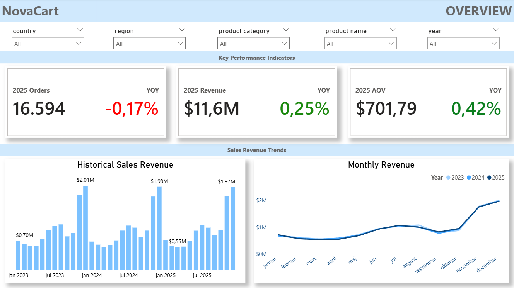

02 — SELECTED WORK
Featured Projects
Real-world data analytics projects showcasing my SQL, Power BI and Python expertise and my approach to different business problems.

Sales Analysis · Product · E-commerce
NovaCart Sales Performance Report
NovaCart, a mid-size e-commerce retailer, needed a clearer view of what was driving sales performance across products and regions. I analyzed 50,000 orders in SQL, modeled them into a star schema and built a Power BI dashboard covering sales trends, product performance and regional results for 2023-2025.
Found that Electronics drives 49% of total revenue but also carries the highest return rate at 7.2% - flagging it as the single biggest lever for improving overall profitability.
Recommended tightening product descriptions and technical specs on Electronics listings to reduce returns and prioritizing Europe and North America for continued investment given their combined 76% revenue share.
SQL
EDA
Power BI
Star Schema
Data Modeling
DAX
See more

Customer Behavior · E-commerce · Marketing · Funnel Analysis
UrbanHive Conversion Funnel Analysis
UrbanHive Commerce had growing traffic but declining conversion efficiency, and needed to know why. I analyzed the full purchase funnel and marketing-channel performance in Python (pandas, matplotlib, seaborn) to pinpoint exactly where and why users were dropping off before purchasing.
Found that social traffic has an 86% view-to-cart drop-off, the steepest of any channel, while email traffic converts at 34%, the platform's highest-quality acquisition source.
Recommended shifting budget toward email capture and retargeting for social visitors, and A/B testing product pages to close the top-of-funnel gap, since checkout and payment were already performing well.
Python
Pandas
Matplotlib
Seaborn
EDA
See more